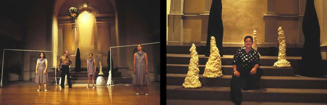
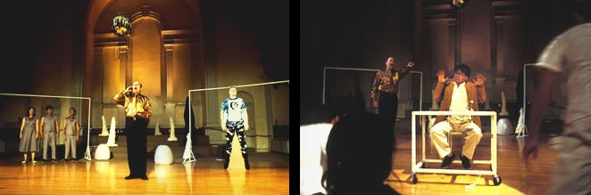
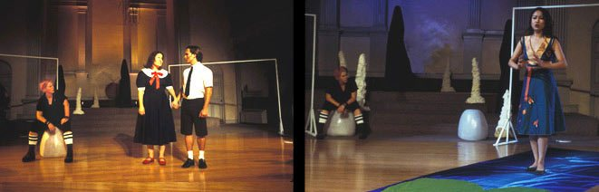

Opera in one act. Libretto by Eileen Myles. Music by Michael Webster. Sets by Beth Stephens. Directed by Simon Leung.
Video — St. Marks Church Workshop, 2004
Photos



Photos: Beth Stephens
Performances
- 2006 — Performance Space 122 (PS122), New York — produced by Beth Morrison Projects. Dir. David Chambers, cond. Jonathan Yates
- 2004 — Hammer Museum, UCLA, Los Angeles
- 2004 — Yerba Buena Center for the Arts, San Francisco
- 2004 — Centro Cultural Tijuana (CECUT), Mexico
- 2004 — St. Mark’s Church in-the-Bowery, New York (workshop) — Sep 22 & 29
Press
- WNYC Leonard Lopate Show — interview with Eileen Myles, Michael Webster, and Julianna Snapper
- Culturebot — “funny, tragic, intelligent and it actually says something”
- James Wagner — “the most successful video/stage integration”